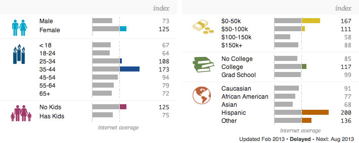
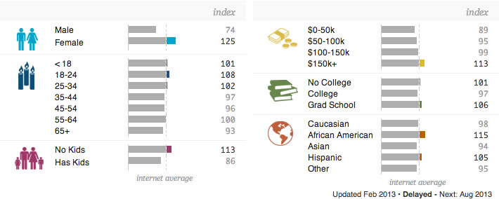

Site Intent
Client Goals
The goal of the client is to develop a redesigned website that will convey a high degree of trust to users browsing the site. Users should feel comfortable with the idea of letting the client into their homes to care for their beloved pets. The client seeks to convey trust and gain confidence by promoting customer testimonials, highlighting their insurance and bond coverage as well as linking to affiliated sites like Angies List. The client also wishes to outline their available services more clearly to convert users into paying customers.
User Goals
The majority of users sampled use the site to determine whether or not the client reliable and well established enough to be worth doing business with. Users who do not feel comfortable with the presentation of the site will not pay for the clients services. Users are normally certain that they are going to hire a pet sitter but don't know which one, this means that comparison shopping and price comparisons are a users top priority.
Competitive Analysis
The Pet Staff
| Demographics |  Demographics provided by Quantcast.com. To view a full report Click Here. | ||||||
| Site Statistics |
|
||||||
| Desired Features | Clear list of rates |
Kathy's Dog Walking & Pet Sitting LLC.
| Demographics | No Site Data Available | ||||||
| Site Statistics |
|
||||||
| Desired Features | Easy to read layout, Clean design, Clear service area list |
Petsitting.com
| Demographics |  Demographics provided by Quantcast.com. To view a full report Click Here. | ||||||
| Site Statistics |
|
||||||
| Desired Features | Clear call to action |
Target Audience
Sophie Adams
Sophie is a 29 year old single female who has never been married and has no time to think about slowing down or doing any of those "old people" things like having a family or sitting at home knitting. Sophie is always on the go, meeting friends, discovering new things and using technology to tie it all togehter. Her two jobs bring in a combined salary of $45k. The downside to this on the go lifestyle is that she has very little time to care for her two cats who she loves dearly. Sophie needs people she can trust to care the two closest things she has to a meaningful relationship, someone who can be available at a moments notice to provide the love and care that her babies deserve.
Devices used heavily are the iPhone and iPad. Sometimes uses a desktop PC or Mac.
Skip Homeny
Skip is a 42 year old divorced male with two children and an ex-wife he tries hard to stay away from. He is a very successful business executive who travels frequently for three to five days at a time. He earns a salary of $80k a year so money isn't really an issue for him. After Skip tried (and failed) to become CEO of a large company he bought a golden retriever named Polly and likes the idea of a dedicated person taking care of his furry pal in his own home as opposed to locking him up in an animal shelter for days on end. Skip tried taking his dog on a road trip once but that didn't turn out so well, something about dogs and car roofs...
Skip prefers working on desktop computers but relies on his trusty iPad while he's waiting at the airport or lounging in his hotel room while on business trips. He also uses his company issued Blackberry during the work day, mostly to check emails and appointments.